Annuaire des entreprises
786 entreprises, institutions et organisations présentées dans les magazines Swiss Knowhow, avec leurs coordonnées.

2b8 Sàrl
Usinage de composants horlogers, décoration et émail grand feu

A 115 Gravures S.A.
Gravure de plaques de tampographie
A à Z emplois SA
Recrutement et placement de personnel

A Carré Architecture et Aménagement SA / A Carré SA
Bureau d'architectes et développement immobilier
A. Aubry AG
Pièces plastiques de haute précision

aarau info
Office du tourisme

Aargauische Industrie- und Handelskammer (AIHK)
Chambre de commerce et association patronale

Abarthel Sàrl
Masses oscillantes, frappe et cadrans émail grand feu

Acronet Sàrl
Travaux acrobatiques sur cordes

Adax SA
Décolletage de haute précision

Adhezion Sàrl
Collage technique de composants

Administration communale d'Aubonne
Commune
Administration communale de Préverenges
Commune
Administration communale de Saint-Prex
Commune

Admo Plastique SA
Injection thermoplastique de précision

AdTime SA
Machines spéciales automatisées pour l’horlogerie

ADV Constructions SA
Bâtiment et génie civil

aebi+kuehni ag
Chasse de têtes (executive search)

AEE Suisse – Dachorganisation der Wirtschaft für erneuerbare Energien und Energieeffizienz
Association faîtière des énergies renouvelables et de l’efficacité énergétique

AEE Suisse romande
Association – énergies renouvelables et efficacité énergétique

AF Toscano SA
Ingénierie et conseil

AFDT – Association des fabricants de décolletage et taillage
Association professionnelle

Agglomération de Fribourg
Collectivité régionale (aménagement et mobilité)

Agosi Allgemeine Suisse SA
Métaux précieux, affinage et pièces

Agrola AG
Distribution de carburants et combustibles

Aiguilla SA
Fabrication d’aiguilles de montres

AJS Ingénieurs civils SA
Bureau d’ingénieurs civils

AJS SA

Alexion Pharma International Sàrl
Biopharmaceutique (maladies ultra-rares)

Alpex Pharma SA
Développement et fabrication pharmaceutique

Alpha Wassertechnik AG
Traitement de l'eau

Alpiq InTec Ticino SA
Installations techniques du bâtiment
Altair-Consulting SA
Prototypage et impression 3D

Altmann Casting SA
Fonte de haute précision et prototypage rapide

AMAG
Automobiles

Amstein+Walthert Genève SA
Ingénierie technique du bâtiment et consulting
Amt für Grundstücke und Gebäude (AGG) des Kantons Bern
Administration cantonale – immeubles et constructions

Amt für Kultur und Sport des Kantons Solothurn (AKS)
Administration cantonale de la culture et du sport

Anastasi & Partners SA
Bureau d’ingénierie civile

Anastasi SA Ingegneria
Bureau d'ingénieurs
André Frei & Fils SA
Outils pour décolletage et instruments de mesure

Annax Schweiz AG / Annax Suisse S.A.
Systèmes d'information voyageurs pour le ferroviaire
Answer SA
Logiciels financiers et cybersécurité

Antiglio SA
Bâtiment et génie civil
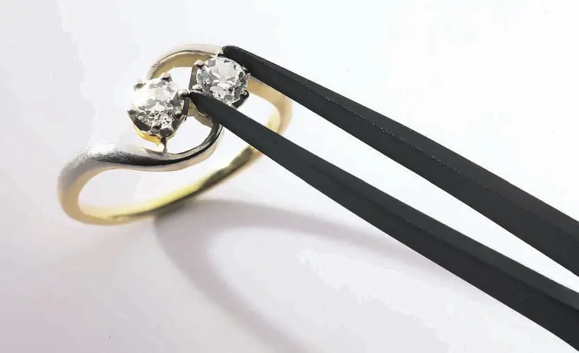
Apex Tool Switzerland Sàrl (anciennement Erem Sàrl)
Outils à main de précision (marque EREM)
apiah – Association patronale des industries de l'Arc horloger
Association patronale

Apleona HSG SA
Facility management

AQC – Association pour l'assurance qualité des fabricants de bracelets cuir
Conformité chimique des matériaux

ARCAM – Association de la région Cossonay-Aubonne-Morges
Association de développement régional
Archeodunum SA
Archéologie préventive

Archi SA
Bureau d'architectes

arcjurassien.ch
Association intercantonale de développement régional
Argonet SA
Intégration informatique et télématique

ARODEMS – Association romande et tessinoise des directeurs d'établissements médico-sociaux
Association professionnelle des directeurs d'EMS

AROLA – Alfred Rochat & Fils SA
Mouvements, modules et complications horlogères

ArteCad SA
Fabrication de cadrans et d'appliques
Arthrex Swiss AG
Implants et instruments de chirurgie orthopédique
AS Ambulances Services SA
Service d'ambulances et de transport de patients

ASDZ Architecture SA
Bureau d'architectes et urbanisme

ASRH – Association Suisse pour la Recherche Horlogère
Recherche horlogère communautaire

Association Ecoparc
Association – développement durable

Astuto Sàrl
Machines à remonter les montres automatiques

atelier 10:8 gmbh
Bureau d'architecture et d'urbanisme

Atelier 94 Architecture SA
Bureau d'architectes et urbanisme
Atelier für Direkte Demokratie / Atelier pour la démocratie directe
Atelier de réflexion et maison d'édition (démocratie directe)

Atelier Nord Sàrl
Bureau d'architectes

atelier ww Architekten SIA AG
Bureau d'architectes

ATIO – Associazione Ticinese Industria Orologiera
Association de l'industrie horlogère tessinoise
ATMOS Medical AG
Distribution d'équipements médicaux (ORL, gynécologie, chirurgie)

Auchlin SA
Polissage de précision et traitements thermiques
AxNum AG
Distribution de technologies pour constructeurs de machines
B. Braun Medical AG
Produits et services médicaux
B+C Ingénieurs SA
Ingénieurs et géomètres

BA ConsultinG SA
Ingénierie des installations sanitaires et apparentées
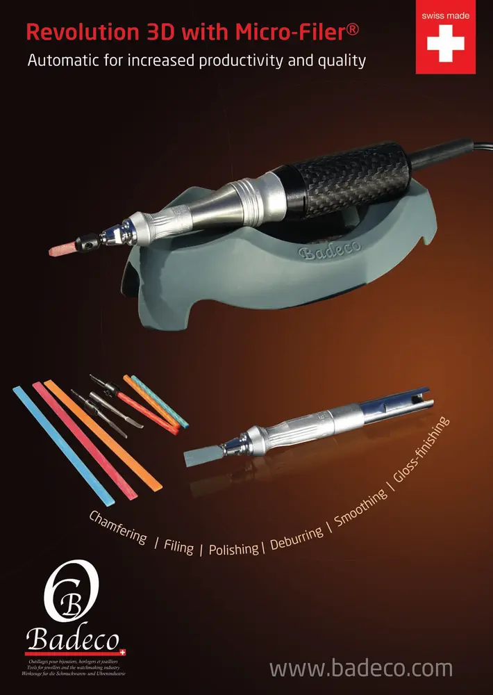
Badeco SA

Balmelli SA
Maçonnerie, béton armé et travaux publics
Bandi SA
Décolletage de composants horlogers haut de gamme

Banque Raiffeisen de Sierre et Région
Banque coopérative
Bardolab

Baselworld
Salon horloger et bijoutier

Bates Sàrl
Consommables et machines de polissage

Bativa SA
Génie civil, bâtiment, terrassement et transport
bauenschweiz
Organisation faîtière de la construction

Baumgartner Diserens Leroux Architectes Sàrl (BDL)
Bureau d'architectes

bawaco ag
Ingénierie et construction d'installations pour l'industrie alimentaire liquide

BBHG SA
Habillage horloger et joaillier

BBP AG
Logiciels financiers et services SWIFT
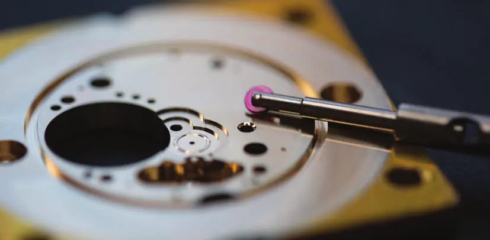
BCP Tourbillons SA
Développement de mouvements à tourbillon et modules de complication

BDL5
Regroupement d'entreprises de l'artisanat de luxe suisse

BDO SA (succursale di Lugano)
Révision, conseil et fiduciaire

Beauregard Manufacture SA
Habillage horloger et bracelets métal
Beco Precision SA
Conception et fabrication de moules d’injection
BECS Sàrl
Bureau d’études et outillages horlogers

Béguelin Sàrl
Outillage de précision et outils horlogers

Bergauer AG
Logiciels de gestion du trafic et des infrastructures

Bernasconi e Forrer Ingegneria e misurazioni SA
Ingénieurs géomètres – mensuration
Bernasconi SA, Genève

Bernmobil
Transports publics urbains

Bersier SA Gravière de Ménières
Extraction de sables et graviers

Besançon électricité – Eric Besançon
Installations électriques

Betelec SA
Ingénierie électrique et optimisation énergétique
BG Ingénieurs Conseils
Ingénierie et conseil
Binggeli Frères SA
Distribution de produits alimentaires
Biopôle SA
Parc des sciences de la vie

bj-coffee SA
Distribution de machines et cafés Nespresso (professionnels)

Blösch SA
Revêtements de surface et cadrans

BM Entreprise du bâtiment SA
Rénovation, gypserie-peinture

Bovard AG / Bovard SA
Conseils en brevets et en marques (propriété intellectuelle)
BP-Conseils
Conseil en organisation et management des institutions de soins

Bracelets Banda SA
Bracelets de montres en cuir

Brain and Behaviour Laboratory (BBL)
Centre de recherche en neurosciences
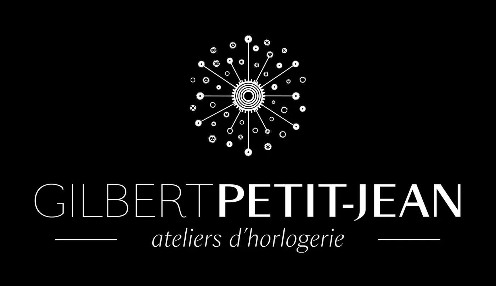
Brasport Group (Brasport SA)
Bracelets de montres, maroquinerie de luxe et usinage

Brasport SA
Bracelets cuir et petite maroquinerie

Broquet Décolletage SA
Décolletage de précision

Bryek Horlogerie Sàrl
Assemblage de montres et terminage T2
Bugnion SA
Conseils en propriété intellectuelle
Bundesamt für Gesundheit (BAG)
Administration fédérale de la santé publique

Caisse cantonale vaudoise de compensation AVS (CCVD)
Assurances sociales – institution de droit public

Caisse des Médecins Société coopérative
Facturation et gestion des débiteurs pour professionnels de santé

Camera di commercio, dell'industria, dell'artigianato e dei servizi del Cantone Ticino (Cc-Ti)
Chambre de commerce

Canton de Berne – Délégation du Conseil-exécutif pour les affaires jurassiennes, Chancellerie d'État
Administration cantonale

Canton de Vaud – Département des Finances et des Relations extérieures, Office des Affaires extérieures
Administration cantonale – relations extérieures

Cardiocentro Ticino
Centre de cardiologie et chirurgie cardiaque

Casabat SA
Entreprise de construction

Casada SA
Entreprise générale de bâtiment et génie civil

CCI – Chambre de commerce et d'industrie du Doubs
Chambre consulaire (France)
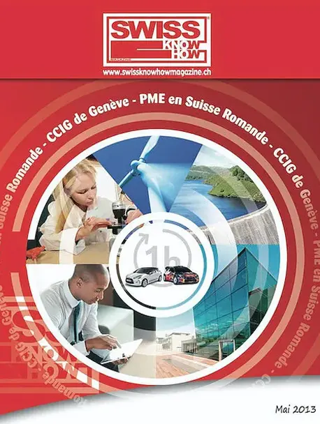
CCIG – Chambre de commerce, d'industrie et des services de Genève
Chambre de commerce

CCT Formazione Linguistica e Culturale
École de langues
Cebo Injections SA
Injection plastique de précision
Cedica SA
Béton prêt à l'emploi

ceff INDUSTRIE – Centre de formation professionnelle Berne francophone
Formation professionnelle technique
CEFNA – Centre de formation neuchâtelois pour adultes
Formation professionnelle pour adultes

CEJEF – Division technique
École technique et professionnelle
Celio Costruzioni SA
Génie civil et bâtiment

Cendres+Métaux SA
Produits en métaux précieux, medtech et luxe

Centrale d'achats des établissements sanitaires société coopérative (CADES)
Centrale d'achats et logistique pour établissements de santé

Centre d’Etudes et de Transferts Technologiques de la HEIG-VD (CeTT)
Recherche appliquée et transfert technologique

Centre d'Imagerie Biomédicale – CIBM
Recherche en imagerie biomédicale
Centre de formation horlogère (CFO – Centro di formazione orologiero)
Centre de formation et de reconversion horlogère
Centre de l’énergie (CEN) de l’EPFL
Coordination de la recherche en énergie

Centre de médecine universitaire CMU – Département de médecine génétique et développement
Recherche et diagnostic en médecine génétique

Centre hospitalier universitaire vaudois (CHUV)
Hôpital universitaire

Centre Laser Victor Hugo
Non précisé

Centre Muller
Musée de la machine-outil et salle événementielle
Centris AG
Externalisation informatique pour assureurs maladie

CFF SA Infrastructure – Projets d’Infrastructure Léman 2030
Chemins de fer – programme Léman 2030
CFF SA Projets région Ouest
Chemins de fer – projets d’infrastructure

CFH – Centre de Formation dans le domaine de l'Horlogerie
Formation horlogère pour adultes

CGC Energie

Chabloz & Partenaires SA
Ingénieurs-conseils – construction bois et sécurité incendie

Chambre de commerce et d'industrie Fribourg (CCIF) / Handels- und Industriekammer Freiburg
Chambre de commerce

Chambre Vaudoise du Commerce et de l’Industrie (CVCI)
Chambre de commerce

Chatelain Prototypes
Outillage horloger (potences, assistance au sertissage)
Chemie Brunschwig AG
Fournitures pour laboratoires et production

chenevartarchitecte – atelier d’architecture et d’espaces bâtis
Bureau d’architecture
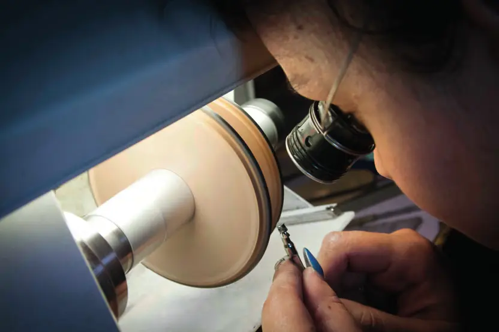
CHH Microtechnique SA
Composants et sous-ensembles de mouvements mécaniques

CIFER – Communauté d'Intérêts pour la Formation des Electriciens de Réseau
Centre de formation professionnelle

CIFOM – Centre interrégional de formation des montagnes neuchâteloises
Formation professionnelle et continue

CIGES SA (Centre Informatique de Gestion)
Informatique centralisée pour collectivités

Cinelec SA
Contrôle des installations électriques

CIP – Centre interrégional de perfectionnement
Formation continue pour adultes

Cippà Trasporti SA
Transports, logistique et douane
Cité générations – maison de santé
Centre médical pluridisciplinaire

Citroën (Suisse) SA – Succursale de Genève
Garage et concession automobile

Claude Piguet SA
Pièces en polyuréthane et usinage métal
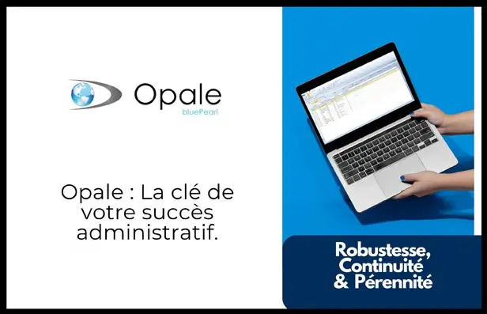
Cleanplanet
Méthodes et produits d'hygiène et de désinfection

Clinica Hildebrand Centro di riabilitazione Brissago
Clinique de réadaptation

Clot Constructions SA
Maçonnerie et génie civil
CNJ Duret SA
Mécanique de précision

Codere SA
Fours industriels pour le traitement thermique
Colas Suisse DG SA
Construction et entretien routiers

Coloral SA
Usinage et traitement de surface de l’aluminium

Combustia SA
Distribution de combustibles et carburants

Commune de Cossonay
Commune
Commune de Neyruz
Commune

Commune de Plan-les-Ouates
Commune

Commune de Sainte-Croix
Commune

Composites Busch SA
Composites hautes performances (carbone)

Comptoir Immobilier SA
Régie immobilière et développement de projets
Concept CNC Design SA
Composants d'habillage du cadran
Concepto Watch Factory SA
Manufacture de mouvements horlogers compliqués

Convention patronale de l'industrie horlogère suisse (CPIH)
Organisation patronale et partenaire social

COREB – Communauté régionale de la Broye
Développement régional intercantonal

Coretra SA Architecture et Construction
Bureau d'architectes et entreprise générale
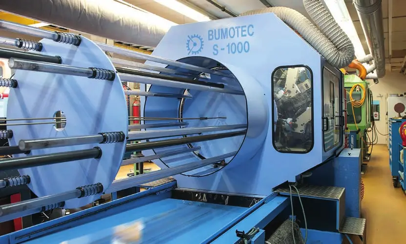
Cornu & Cie SA
Bracelets métalliques, fermoirs et boucles

Cosanum AG
Logistique de santé
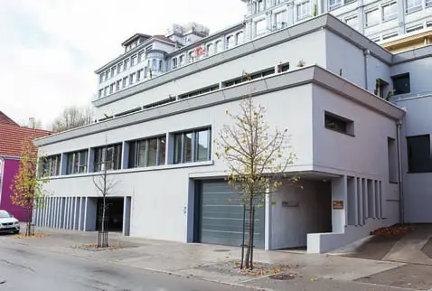
COSC – Contrôle Officiel Suisse des Chronomètres
Certification chronométrique
Covatec SA
Automation et machines d’assemblage de précision
CPLG Concept Prestations Logistique Globale SA
Logistique
CPMA SA – Centre de Procréation Médicalement Assistée
Procréation médicalement assistée et endocrinologie gynécologique

CREM (Centre de recherches énergétiques et municipales)
Recherche appliquée en énergie urbaine

CRIDEC SA – Centre de ramassage et d'identification des déchets spéciaux
Traitement des déchets spéciaux

CRM Sàrl (Construction Réseaux Maintenance)
Réseaux de fibre optique pour infrastructures routières

Croix-Rouge genevoise
Association humanitaire et sociale

Cronal SA
Gravure de haute précision

CSCS – Centro Svizzero di Calcolo Scientifico (Swiss National Supercomputing Centre)
Centre de calcul scientifique

CSD Ingénieurs SA (CSD Holding AG)
Conseil en ingénierie et environnement

CSS Assurance (agence de Sion)
Assurance maladie et accidents

CTM SA – Centre de Technologies Microtechniques
Plasturgie, électroérosion, MIM et étampage

Curmed AG
Distribution d'implants orthopédiques
CV Décor Sàrl
Décoration de mouvements horlogers
Cyberis
Barrettes de bracelets haut de gamme
D-Auto Suisse SA – Bentley Lausanne
Automobiles

d-Tec Dubois technologies associées SA
Polissage et traitements de surface
D.E.S. Systèmes de sécurité SA
Protection incendie et sécurité
D’Andrea Michel SA
Travaux acrobatiques et sur corde
Daler-Spital (Hôpital Daler)
Clinique privée

Darwin Airline
Compagnie aérienne régionale
Datamed
Informatique médicale

DC Swiss SA
Outillage (marque Nano Tools)

de Rham Immobilier
Gérance et services immobiliers

Décors Guillochés SA
Guillochage et décoration horlogère

Décotech SA
Décoration de mouvements horlogers

Demant SA
Outils diamant de haute précision

Demhosa (département d'Incabloc SA)
Décolletage et taillage de précision
Departement Chemie Universität Basel
Département universitaire de chimie

Département de l'aménagement, du logement et de l'énergie (DALE) – Canton de Genève
Administration cantonale

Département de l’économie et du sport – État de Vaud
Administration cantonale – économie et sport
Département de physiologie – Université de Lausanne
Département universitaire de recherche en physiologie et métabolisme
Département du développement territorial et de l’environnement – République et Canton de Neuchâtel
Administration cantonale – territoire, mobilité et énergie
Département du territoire et de l’environnement (DTE) – État de Vaud
Administration cantonale – territoire, environnement et énergie

Deposito Franco Doganale di Chiasso e Stabio (Punto Franco)
Logistique et entreposage sous douane
DHVJ SA (Décoration horlogère Vallée de Joux)
Anglage et décorations horlogères à la main

Diafin SA
Négoce de diamants pour l'horlogerie et la bijouterie

Diametal Group
Outils de coupe, abrasifs et pièces d'usure

Dianalabs
Laboratoire d'analyses médicales

Die Berner Arbeitgeber – Verband der Arbeitgeber Region Bern (VAB)
Association patronale

Diggelmann + Partner AG
Bureau d’ingénieurs civils (ponts, génie civil urbain)

DigitalRoad SA
Diagnostic numérique des réseaux routiers
Dihawag Horlogerie
Outils de coupe diamantés
Dipartimento della sanità e della socialità (Canton Ticino)
Administration cantonale de la santé et des affaires sociales

Direction de l’énergie – Canton de Vaud
Administration cantonale – énergie
Direction générale de la mobilité et des routes (DGMR) – État de Vaud
Administration cantonale – mobilité et routes

District du Jura-Nord vaudois (Préfecture)
Administration publique – préfecture

DM Surfaces SA
Cadrans monobloc par technologie laser
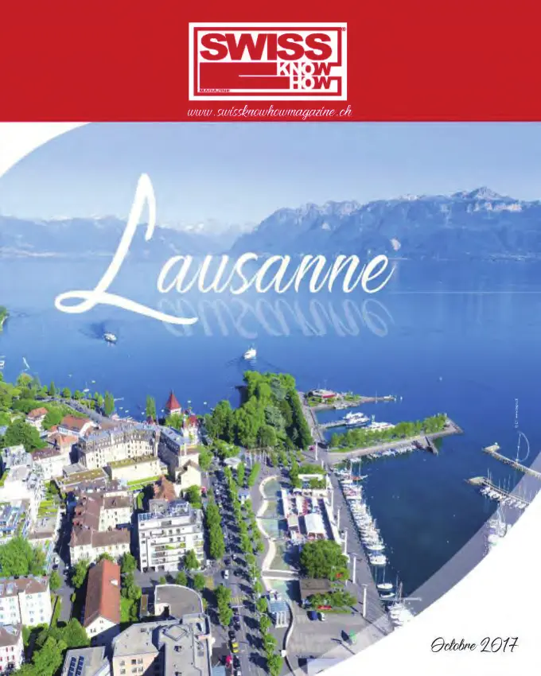
Domaine de Bois-Bougy
Exploitation agricole et chambres d'hôtes

DPE Electrotechnique SA
Bureau d’ingénieurs en électricité
Dr. J. Grob & Partner AG, Bauingenieure SIA/USIC
Bureau d'ingénieurs civils

Dreyfus & Associés
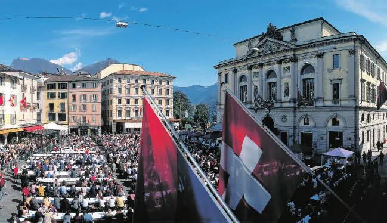
Drima SA
Placement de personnel

Drosera Ecologie Appliquée SA
Bureau d’études en environnement et paysage

DSSA Dumont-Schneider SA
Bureau d'ingénieurs en électricité
Eberhard Bau AG (Eberhard Unternehmungen)
Génie civil, déconstruction, assainissement et recyclage

École française de Berne (EFB)
École internationale
École Minerva Sàrl
École de formation paramédicale
Ecole Nouvelle de la Suisse Romande (ENSR)
Ecole privée
École polytechnique fédérale de Lausanne (EPFL)
Haute école polytechnique

École technique de la Vallée de Joux – ETVJ
École technique

Ecometal SA
Récupération et traitement des métaux précieux

Econorm AG
Verres saphir fonctionnels
Econs SA
Conseil en environnement et santé dans le bâtiment

Ecoscan SA
Bureau d’études en environnement
Edifea SA
Entreprise générale de construction

Editech SA
Bureau d'ingénieurs civils
Effitec SA
Contrôles et sécurité électriques

Eichenberger Futuretech AG
Fusion sélective laser (SLM) et prototypage

Elex AG
Épuration des gaz de fumée

Emch Aufzüge AG
Ascenseurs sur mesure
Emch+Berger AG Bern
Ingénierie, planification et conseil (infrastructures)

Emch+Berger SA Lausanne
Ingénierie, planification et management de projets

Emil Frey SA – Agence BMW-Mini Genève
Garage et concession automobile

Endetec – Neroxis SA
Monitoring de la qualité de l'eau

Energest
Gestion technique et énergétique du bâtiment

Energie Service Biel/Bienne (ESB)
Services industriels – électricité, gaz, eau, télécommunications

Energies Nouvelles Fribourg
Association de professionnels – énergies renouvelables

Energies Nouvelles Valais
Association d’entrepreneurs – énergies renouvelables
Energies Nouvelles Vaud
Association d’entrepreneurs – énergies renouvelables
Energil Sàrl
Bureau d’études en énergie et installations techniques
ENGIE Services AG
Technique du bâtiment et services énergétiques
Ennio Ferrari SA

Ensemble Hospitalier de la Côte (EHC)
Hôpitaux et EMS
EP Electricité SA
Installations électriques, télématique et automation
EPFL – Laboratoire de photovoltaïque et couches minces électroniques (PV-Lab)
Recherche en photovoltaïque

EPHJ – Salon international de la haute précision
Salon professionnel
Erbicol SA
Pierres synthétiques pour l'horlogerie et céramiques poreuses

Eric Chabod

Erma Boécourt SA
Façonnage de verres de montres en saphir

Ernst & Young AG (Bern)
Audit, fiscalité, transactions et conseil
ERTEC SA
Ingénierie routière et essais de matériaux

Escad SA
Vernissage et laquage de cadrans
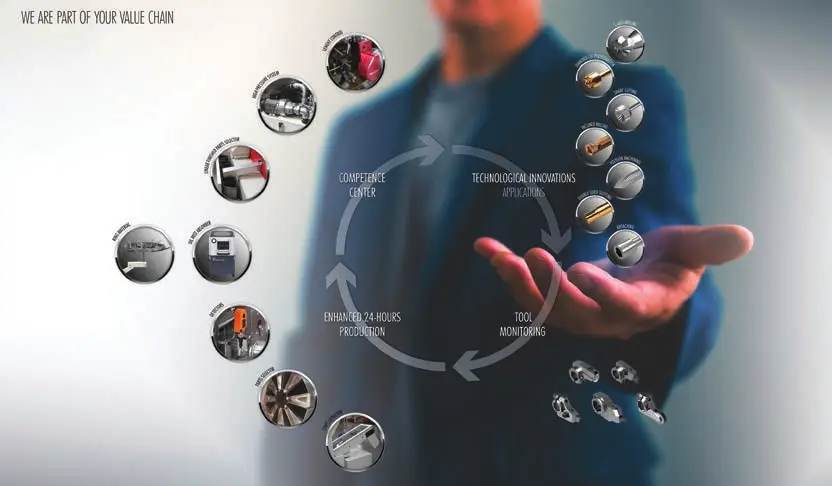
ESCO SA
Machines-outils de décolletage (Escomatic)
Espace Real Estate Holding AG
Investissement immobilier
Estoppey-Addor SA
Galvanoplastie et traitements de surfaces

Etameca SA
Mécanique de précision (sous-traitance)

Etampes Kaufmann SA
Étampage et découpage

Fabrimex Systems AG
Informatique industrielle et vision

Fabrique de décolletage J. Baertschi SA
Décolletage de précision sur multibroches

Fafco S.A.
Accumulateurs de glace et capteurs solaires

Farid (Suisse) SA
Équipements (véhicules de collecte)
Farmwood SA
Construction de bâtiments à grande portée en bois

FART, Ferrovie Autolinee Regionali Ticinesi SA
Transports publics (train, bus, téléphériques)

FASMED – Dachverband der Schweizerischen Handels- und Industrievereinigungen der Medizintechnik
Faîtière de la technique médicale
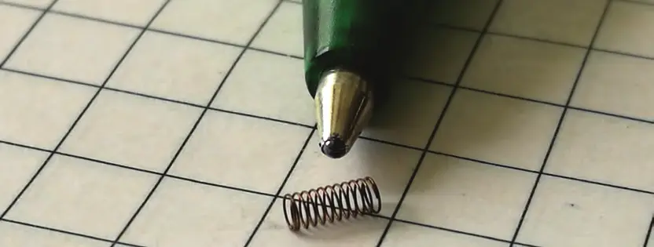
Favre-Steudler SA
Fabrication de ressorts industriels

Fédération de l'industrie horlogère suisse FH
Association faîtière de l'industrie horlogère
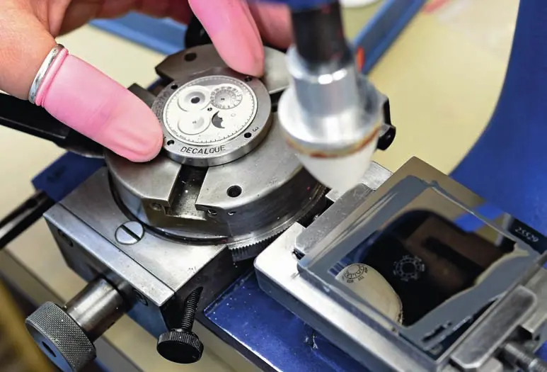
Fehr et Cie SA
Fabrication de cadrans
Ferring International Center S.A.
Industrie pharmaceutique

FFS SA Infrastruttura Progetti Regione Sud
Chemins de fer – projets d’infrastructure

Fleury SA
Lignes de transfert modulaires et sous-traitance d'ébauches
FLP Ferrovie Luganesi SA
Chemin de fer régional
Flückiger + Bosshard AG
Bureau d'ingénieurs civils

Fondation Bartimée
Institution de traitement et de réinsertion des personnes dépendantes

Fondation Beau-Site
Établissements médico-sociaux

Fondation Dr Henri Dubois-Ferrière Dinu Lipatti
Fondation de soutien à la recherche contre le cancer
Fondation L'étrive
Atelier socio-professionnel, conditionnement horloger

Fondation OsiriX
Fondation (logiciel libre d'imagerie médicale)

Fondation Pierre Gianadda
Musée et centre d'expositions

Fondation pour les Nouvelles Technologies Chirurgicales (FNTC)
Fondation de recherche en technologies chirurgicales

Fondation Timelab
Certification horlogère (Poinçon de Genève)

Fondation WOSTEP
Formation et perfectionnement horloger
Fontana Print SA
Imprimerie

Formoplast SA
Transformation des matières plastiques
Forum Fribourg (Expo Centre SA)
Centre d’expositions et d’événements

Fratelli Censi SA
Construction, entretien et logistique ferroviaires
Freyssinet SA
Génie civil spécialisé – précontrainte et réparation d’ouvrages
Frieden SA
Pierres saphir et rubis de haute précision

Frigaz SA / Frigaz AG
Distribution de gaz naturel

Froidevaux SA
Gravure chimique de clichés
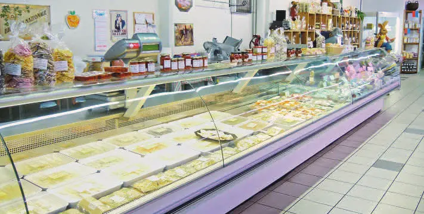
Frutta Banfi SA
Commerce de fruits et légumes
FTAF – Federazione ticinese delle associazioni di fiduciari
Fédération professionnelle des fiduciaires
G. Comte SA
Bâtiment, génie civil et ouvrages d’art
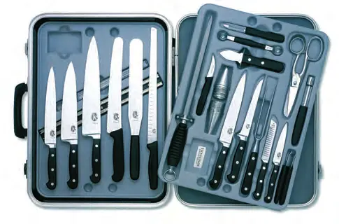
G. Schweizer SA
Machines et fournitures pour boucheries et cuisines professionnelles

G&N Wuthrich SA
Plâtrerie, peinture et isolation

Gainerie Moderne SA
Emballages et agencements pour le luxe

Garage G. Kolly SA
Véhicules utilitaires et systèmes de pesage

Gastromer
Grossiste en produits de la mer
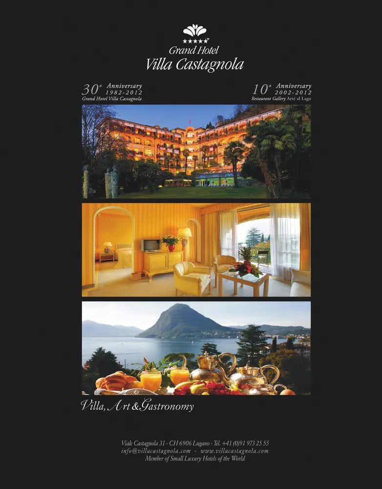
GastroTicino – Centro di Competenza Agroalimentare (« Ticino a Tavola »)
Promotion agroalimentaire et restauration
Gaznat SA
Approvisionnement et transport de gaz naturel

GB Microfab
Microtechnologies appliquées aux composants horlogers

GDclimat SA
Chauffage, ventilation, climatisation et tuyauterie industrielle
Gebrüder Loepfe AG
Systèmes de contrôle pour l'industrie textile

GEMS World Academy International School-Etoy
École internationale privée

Genevaccord Alternative Dispute Resolution (A.D.R.) SA
Médiation de conflits
Geotest AG / Geotest SA
Géologie, géotechnique, géophysique et environnement
Geotherm SA
Forages géothermiques et recherche d’eau
GEPY-PAPAUX SA
Pointes tournantes et quills de précision
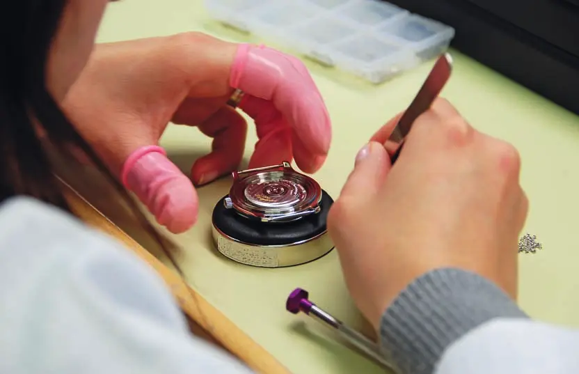
Gérald Badan SA
Décolletage de précision
GETAG Entsorgungs-Technik AG / GETAG Romandie SA
Technique de gestion des déchets et recyclage
Gets Medical Safety Systems SA (Gets MSS)
Systèmes d'appel malade et de sécurité

Gil Sertissage SA
Sertissage de pierres et diamants

Gilbert Petit-Jean SA
Assemblage de mouvements, anglage et décoration
Giroud mécanique de précision SA
Tables coulissantes de précision et potences de chassage

Glas Trösch Holding AG
Fabrication et transformation du verre

GMG Composants
Aiguilles, index et appliques
GMTI SA
Assemblage et emboîtage horlogers (T0, T1, T2)
Gravière de La Claie-aux-Moines SA (GCM)
Granulats, béton frais et recyclage

Greater Zurich Area AG
Promotion économique internationale
Greub Machines SA
Commerce de machines neuves et d'occasion
Griffes Consulting SA
Conseil en propriété intellectuelle

Groupe E
Entreprise générale de l’énergie
Groupe Promotion – Promotion Bracelets SA
Bracelets métalliques et composants d’habillage

Groupement industriel du canton de Fribourg (GIF-VFI)
Association industrielle
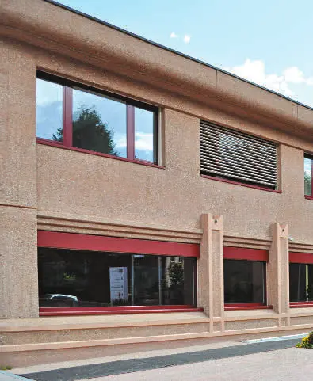
Gruppo Sicurezza SA
Systèmes de sécurité

GS Time Sagl
Assemblage de montres Swiss made
Guillod Gunther SA
Boîtes de montres et composants horlogers

Guyot | Architectes – Etudes et conceptions architecturales SARL
Bureau d'architectes

Gymnase français de Bienne
Ecole de maturité

H-Net AG
Logiciels eHealth et échange de données médicales

H+ Die Spitäler der Schweiz
Faîtière des hôpitaux, cliniques et institutions de soins
Hagmann Tec SA
Flux laminaires, emballage sous blister, lavage et sous-traitance

Handels- und Industrieverein des Kantons Bern – Sektion Biel-Seeland
Association économique

Handels- und Industrieverein des Kantons Bern – Sektion Emmental
Association économique

Hardturm AG
Développement immobilier
Harting AG
Connectique et composants 3D-MID

HASTAG (Zürich) AG
Gravier, béton, recyclage et décharges

Haute École Arc Ingénierie
Haute école d'ingénieurs

Haute Ecole de Santé Vaud (HESAV)
Haute école de santé

Haute Ecole Pédagogique Vaud (HEP Vaud)
Formation des enseignants
Havells-Sylvania Switzerland AG
Lampes et luminaires

Heiniger Câbles SA (Heiniger Kabel AG)
Câbles électriques, réseaux et confection de câbles

Helsinn Group
Groupe pharmaceutique – soins de support en oncologie

Henri Badoux SA (Badoux-Vins)
Viticulture et négoce de vins
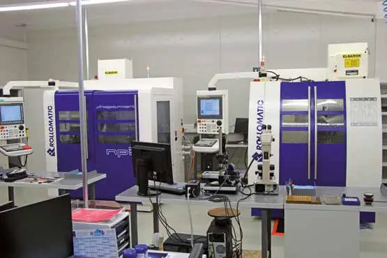
Henri Robert SA
Outils de coupe en métal dur

HES-SO Valais-Wallis – Haute Ecole d’Ingénierie (HEI)
Haute école d’ingénierie
Hestia Constructions SA
Entreprise générale

HFR – Hôpital fribourgeois / freiburger spital
Hôpital public cantonal

HKTDC (Hong Kong Trade Development Council)
Organisateur de salons commerciaux

Hochschule für Wirtschaft FHNW
Haute école spécialisée en économie

Hôpital du Jura bernois SA
Hôpital régional
Hôpitaux universitaires de Genève – HUG
Hôpital universitaire
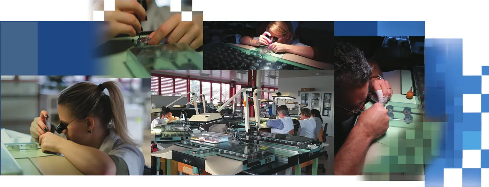
Horlogerie Schild SA
Manufacture de mouvements mécaniques

Horlyne SA
Masses oscillantes et décoration horlogère

Hörmann Schweiz AG
Portes, portails et motorisations
HRS Real Estate AG
Développement immobilier et entreprise totale

HUG – UNITEC, Office of Technology Transfer (Université de Genève)
Transfert de technologies

Humabs BioMed SA
Biotechnologie – anticorps thérapeutiques

Hybrid SA
Assemblage microélectronique

Hydrosystem SA
Hydraulique et pneumatique
Hygin Debons Serrurerie – Construction métallique
Serrurerie et construction métallique

IBAarau AG
Fourniture d'électricité, gaz, eau et chaleur

ICAM SA
Logiciels FAO et mise en réseau d'ateliers

ID Imagerie & Développement (Imagerive et Institut de radiologie de la Colline)
Imagerie médicale
IDIAP (institut de recherche)
Recherche en gestion de l'information multimédia

Il Falegname Fabrizio Sagl
Menuiserie et agencement

IMH SA – Innovations Manufactures Horlogères
Manufacture de composants et de mouvements

IMP Bautest AG
Essais de matériaux, conseil en construction et analyses

Implenia Suisse SA (Buildings Fribourg)
Construction et entreprise générale
Impuls Mittelschule
Relations publiques des gymnases zurichois
IMT Masken und Teilungen AG
Microstructures et couches minces sur verre

Incabloc SA
Amortisseurs de chocs et composants horlogers
Infra Suisse
Association faîtière des constructeurs d’infrastructures

Inhotec SA
Composants et ébauches horlogers
Inselspital – Universitätsklinik für Hals-, Nasen- und Ohrenkrankheiten, Kopf- und Halschirurgie
Clinique universitaire ORL

Inselspital Bern – Universitätsspital Bern
Hôpital universitaire

Institut de Génie Thermique (IGT) de la HEIG-VD
Recherche et formation en énergie

Institut fédéral des hautes études en formation professionnelle IFFP
Formation et recherche en formation professionnelle

Institut suisse de thérapies cellulaires (Swiss Institute of Cell Therapies, SICT)
Fondation de recherche en thérapies cellulaires

International School of Berne (ISBerne)
Ecole internationale

Interprofession du Gruyère (IPG)
Organisation interprofessionnelle fromagère

IT Valley (Cluster)
Cluster informatique
ITPC AG
Conseil et exploitation SAP
Itten+Brechbühl AG / SA
Architecture et planification générale

J.P. Müller AG
Systèmes de marquage textile et techniques d'assemblage du bois

Jakob Stiefel GmbH
Installations de valorisation thermique des déchets
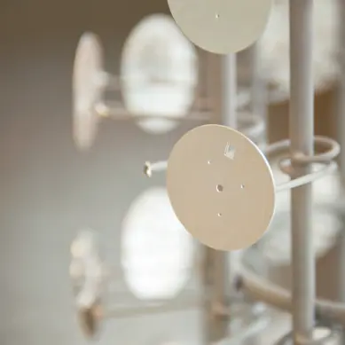
Jean Singer & Cie SA
Fabrication de cadrans
John P. Gandolfi Insurance Brokers
Courtage en assurances
Johnson & Johnson AG
Produits et dispositifs médicaux

Joseph Baume SA
Étampage de composants d'habillage
Joseph Bonvallat SA
Galvanoplastie, décoration et polissage
Jura Management AG (Jura Materials)
Matériaux de construction (ciment, gravier, béton)
Juracime S.A.
Cimenterie (argile calcinée)
Juval Horlogerie
Horlogerie de collection et montres vintage
Kälin & Associés SA
Bureau d'ingénieurs civils
Kanton Basel-Stadt – Departement für Wirtschaft, Soziales und Umwelt
Administration cantonale – économie, social et environnement
Kanton Wallis – Departement für Finanzen und Energie
Administration cantonale – finances et énergie

Kantonsspital Aarau (KSA)
Hôpital cantonal
Kellerhals+Haefeli AG
Géologie appliquée et géotechnique

Keramik Laufen AG
Céramique sanitaire et équipements de salle de bains
Kessler & Co SA
Conseil en risques, assurances et prévoyance

KIF Parechoc SA
Antichocs, raquetterie et décolletage de précision
Klein AG
Aciers fins et métaux
Klemmfix (Schweiz) AG
Signalisation, marquage et service hivernal

Klinik Susenberg
Clinique de gériatrie aiguë, réadaptation oncologique et soins palliatifs
Kohler Electroplastie Sàrl
Électroplastie et dépôts de métaux précieux
Kummler+Matter SA
Infrastructures ferroviaires, routières et énergétiques
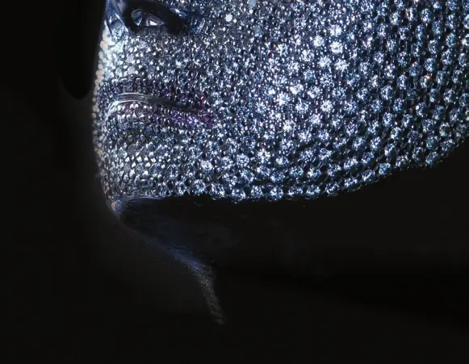
Kyburz & Cie SA
Produits horlogers transparents (verres, décorations)
L&F Serrurerie & Constructions Métalliques SA
Serrurerie et constructions métalliques
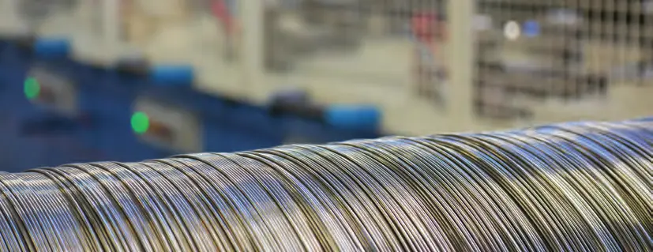
La Cible SA
Tréfilage et profilage de matière pour le décolletage
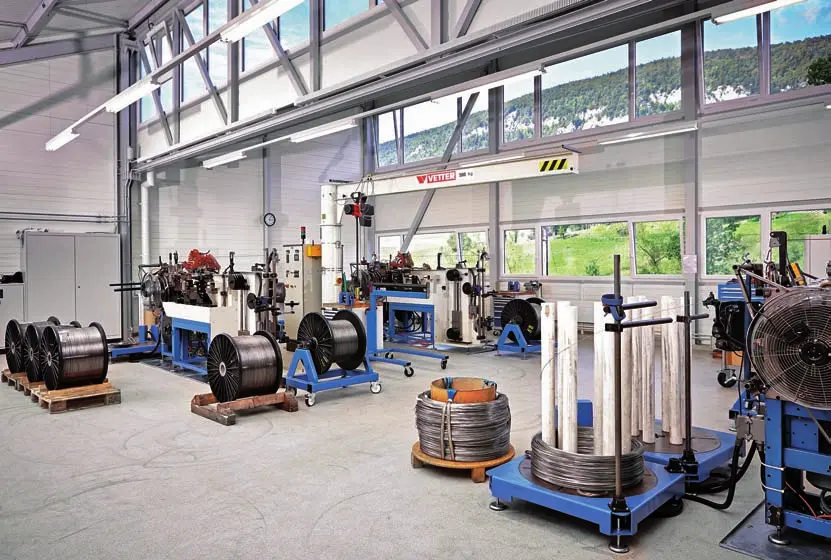
La Cible Tréfilage & Profilage SA
Tréfilage et profilage de fils de précision
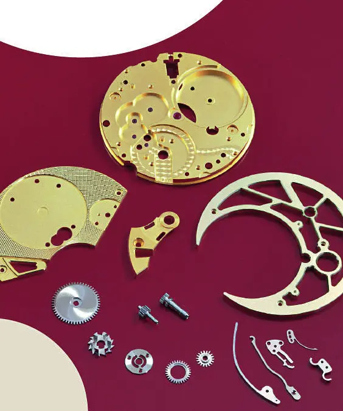
La Manufacture des Franches-Montagnes SA
Composants de mouvements (fraisage, décolletage)
La Mobiliare – Agenzia generale Lugano
Assurances
La Pierrette SA
Pierres d'horlogerie

Label Surface SA
Décoration artistique de cadrans et casting de précision

Laboratoire d'analyses médicales Dr Luc Salamin S.A.
Laboratoire d'analyses médicales
Laboroute SA
Laboratoire de matériaux routiers
Lausanne Hospitality Consulting SA (LHC)
Conseil en hôtellerie et accueil
Lausanne Tourisme
Office du tourisme

LC Logiciels et Conseils SA
Logiciels de gestion

Le futur du cadran (annonceur)
Cadrans

Leathertime Sàrl
Maroquinerie de luxe (écrins, coffrets)

Lécureux SA
Instruments de précision et automation horlogère

Lernpädagogisches Zentrum AG (LPZ)
Ecole privée et soutien scolaire

Les Artisans Boîtiers SA
Boîtes de montres très haut de gamme

Les Blanchisseries Générales LBG SA
Gestion globale du linge professionnel
Les Fils d'Henri Frei SA
Décolletage, taillage et roulage de fournitures horlogères

Ligues de santé du canton de Fribourg
Associations de soutien aux personnes atteintes de maladies chroniques
Luthy Machines SA
Négoce de machines-outils
Luzi AG
Compositions parfumées
Made In'Art SA
Décolletage haut de gamme

Mairie de Pontarlier
Collectivité locale (France)

Maître Frères SA
Injection plastique et moules

Manufacture Cartier Horlogerie
Manufacture horlogère intégrée

Manufacture de Haute Accessoirie (MHA) – Niklaus-LNI SA
Accessoires de luxe en private label
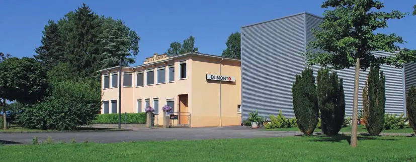
Manufactures d'Outils Dumont SA
Pinces et brucelles de précision
Marflow AG
Matériel médical pour l'urologie et la gastro-entérologie
Matteo Muttoni
Construction (ponts, ouvrages souterrains, fondations spéciales)
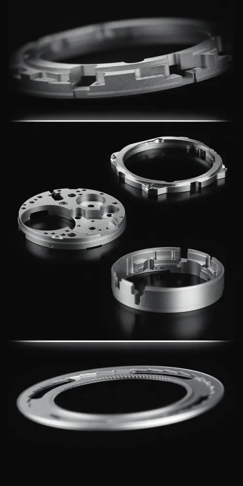
Matthey Décolletages SA
Décolletage de précision, cercles d'emboîtage et composants

mawi Marcionelli & Winkler + Partners SA
Ingénieurs civils et planificateurs
MaxiVAX
Start-up biotechnologique – vaccins thérapeutiques
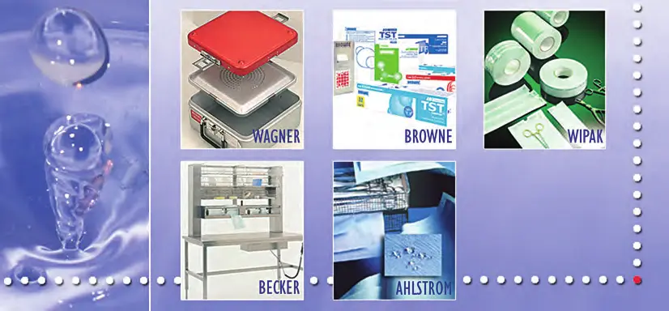
MayBa.ch SA
Stérilisation hospitalière

MC-monitoring SA
Surveillance de machines tournantes
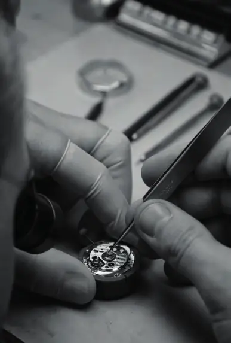
MCH SA – Mouvements et complications horlogers
Service après-vente, complications et emboîtage
Mecanor SA
Outils d'étampage et pièces découpées de précision
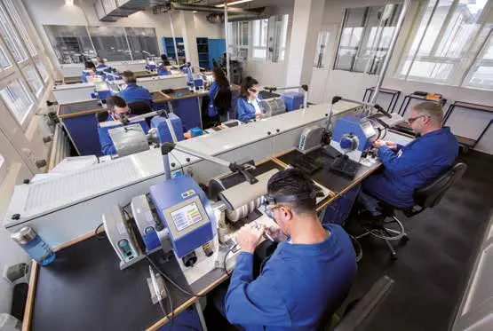
Meco SA
Couronnes, poussoirs et valves à hélium

Medacta International
Dispositifs médicaux orthopédiques

Medeco-ch Sàrl
Distribution d'implants d'orthopédie et de traumatologie
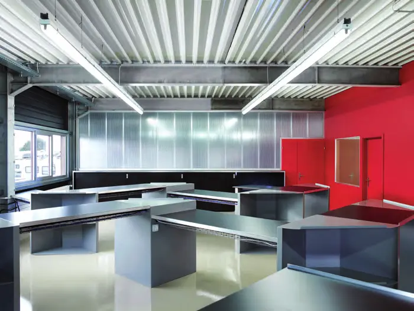
Medicatech Sàrl
Maintenance et réparation d'instruments chirurgicaux
Medileg SA
Distribution de bas de compression et produits orthopédiques

Medizinisches Zentrum Römerhof (MZR)
Centre médical

Mercier SA
Assemblage de mouvements et de montres

Merck Sharp & Dohme AG (MSD)
Industrie pharmaceutique
Mérusa SA
Manufacture de cadrans de luxe

Métafil-La Girolle SA
Décolleteuses CNC et usinage de précision

Meworla GmbH
Systèmes d'information et CRM

Meyer Sintermetall AG
Métallurgie des poudres et métal lourd fritté

Meylan Frères SA
Étampage progressif de précision

MeyrinCentre
Centre commercial
Minnovarc – Innovation franco-suisse dans les microtechniques
Programme Interreg d'innovation
MLV Sàrl
Pose de matières luminescentes et de vernis

MMM Sterilisatoren AG
Systèmes de stérilisation et de désinfection

Monnay Electricité SA
Installations électriques, domotique et photovoltaïque

Monnier SA
Électroplastie et décoration horlogère

Monod-Piguet + Associés Ingénieurs Conseils S.A.
Ingénierie civile et planification générale

Montangero & Fils SA
Plâtrerie-peinture
Montrelux SA
Assemblage et personnalisation de montres

Montres Corum Sàrl
Haute horlogerie

MPM facility services SA
Nettoyage et facility services
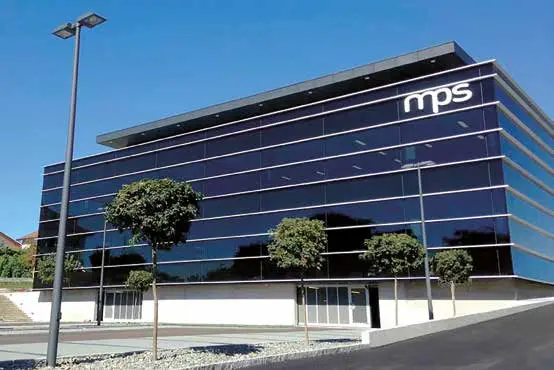
MPS Micro Precision Systems AG (MPS Watch)
Roulements à billes et composants de mouvements

Muller Machines SA
Commerce de machines-outils d'occasion
Musée international d'horlogerie (MIH)
Musée

MW Programmation SA
Logiciels CFAO et services de commande numérique
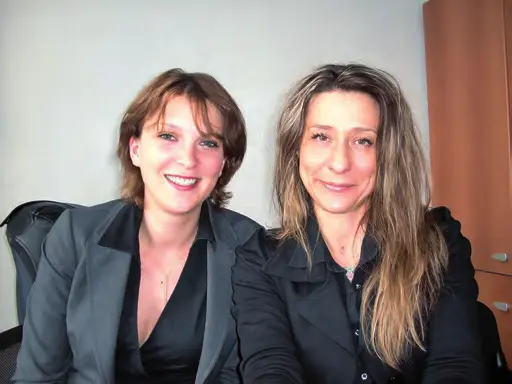
My Private Care Sàrl
Soins à domicile privés
NAT – New Ambrosetti Technologies SA
Mécanique de précision aéronautique et spatiale

neo technologies SA
Conseil et solutions de smart metering

Neosys AG
Conseil en durabilité, environnement et sécurité

Neroxis SA
Capteurs pour la qualité de l'eau et du gaz
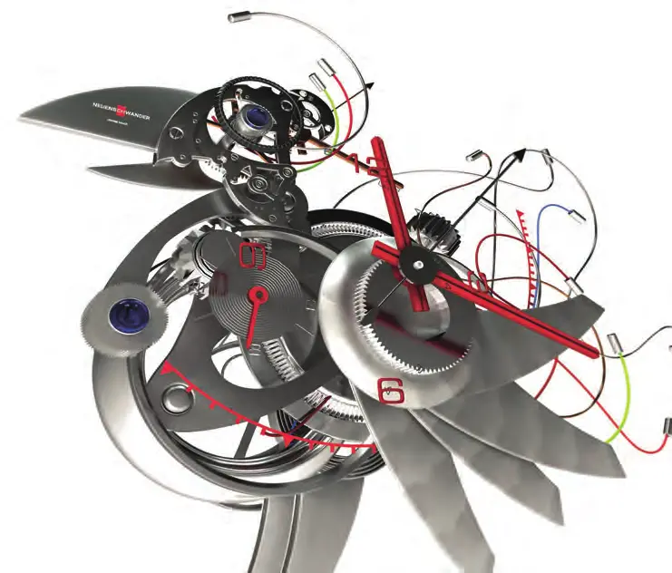
Neuenschwander Composants Horlogers SA
Composants, polissage et sertissage
Neyergie SA
Société communale d’énergie renouvelable

NGL Cleaning Technology SA
Produits de nettoyage industriel à base aqueuse

Nilan AG
Ventilation et pompes à chaleur

NMS Bern
Ecole privée et formation des enseignants

Norbert SA Géologues conseils
Géologie de l’ingénieur et hydrogéologie

Notz Plastics SA
Distribution de plastiques semi-finis et de granulés
Novigenix SA
Biotechnologie – diagnostic
Novotel Lausanne Bussigny
Hôtel et centre de conférences

NStCM – Chemin de fer Nyon-St-Cergue-Morez
Transport ferroviaire

Oesch GmbH
Distribution d'accessoires métalliques pour bracelets cuir et écrins

Office fédéral des routes (OFROU)
Administration fédérale – routes nationales
Officine Ghidoni SA
Construction métallique
OFISA Informatique SA
Intégrateur de solutions informatiques
Online Automation SA
Automatisation et informatique industrielle
Opale Solutions SA
Orion Assurance de Protection Juridique SA
Assurance de protection juridique
Orphanet Suisse – Service de médecine génétique (HUG)
Information sur les maladies rares

OSC – Organizzazione sociopsichiatrica cantonale
Psychiatrie publique

OSTAJ – Observatoire statistique transfrontalier de l'Arc jurassien
Statistique publique transfrontalière

Paler Lavori Speciali del Sottosuolo SA
Travaux spéciaux du sous-sol

Parc naturel régional du Doubs (APNRD)
Parc naturel régional

Pärli AG
Technique du bâtiment – chauffage et sanitaire
Partn-Air SA
Ventilation

Pauli Uhrenservice SA
Montage, révision et réparation de montres
Pays Horloger
Pays (collectivités territoriales françaises) – projet de PNR

Perret Gentil + Rey & Associés
Non précisé

Pibor Iso SA
Composants horlogers

Pierre Bercher SA
Injection plastique de pièces techniques horlogères
Pillet Geotechnique SA
Géotechnique, hydrogéologie et diagnostic des polluants
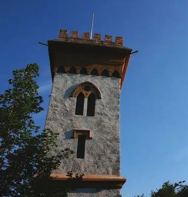
PJ Made SA
Assemblage de montres (T0 à T3)
PKB Privatbank
Banque privée
Placor SA
Bureau d'étude en solutions plastiques
Pôle Energies HEIG-VD
Coordination de la recherche en énergie

Policlinique médicale universitaire Lausanne (PMU)
Médecine générale et communautaire universitaire

Polirapid Swiss SA
Fabrication de brosses techniques
Polissages Gautier SA
Polissage en vrac de petites pièces

Polydec SA
Micro-décolletage

Polygone Architecture

Port-Franc et Entrepôts de Lausanne – Chavornay – PESA SA
Transport, entreposage et dédouanement

Posalux SA
Machines-outils de micro-usinage

Poseidon Engineering SA
Géophysique et études territoriales

Pöyry Schweiz AG
Ingénierie et conseil
Préfecture de Biel/Bienne
Administration cantonale

Préfecture de Nyon
Administration cantonale
Procolor LCTI Sàrl
Tampographie horlogère

Prodécor VD SA
Décoration horlogère haut de gamme
Prodo SA
Bitumes et entretien des revêtements routiers
Productec SA
Logiciels CFAO et programmation CNC
Progin Grégoire
ProRaris, Alliance des maladies rares – Suisse
Association faîtière de patients

Protofil Sàrl
Électroérosion à fil et micro-usinage

PwC
Audit et conseil

PWP SA
Composants pour véhicules utilitaires
Quadrance & Habillage
Fabrication de cadrans haut de gamme

Queloz SA
Boîtes de montres haut de gamme
Quirici Frères SA
Électricité, télématique et photovoltaïque

Reactolab SA
Distribution de produits chimiques et de matériel de laboratoire

REG – Fondazione dei Registri svizzeri dei professionisti nei rami dell'ingegneria, dell'architettura e dell'ambiente
Registre professionnel

Regio Energie Solothurn (RES)
Fourniture d'énergie et d'eau
Région de Nyon
Association intercommunale de développement régional

Region Solothurn Tourismus
Office du tourisme
Régionyon – Conseil régional du district de Nyon
Association de développement régional

République et Canton de Neuchâtel – Département de l'économie, Office de promotion économique (OPEN)
Promotion économique cantonale

République et canton de Neuchâtel – Département de l'économie, Secrétariat général
Administration cantonale – économie

République et canton de Neuchâtel – Département de l'éducation, de la culture et des sports (DECS)
Administration cantonale – formation

République et canton du Jura – Département de la Formation, de la Culture et des Sports
Administration cantonale – formation
Réseau des villes de l'Arc jurassien (RVAJ)
Réseau intercommunal
Réseau fribourgeois de santé mentale (RFSM)
Psychiatrie et santé mentale
Résidence Carouge-Centre
Logements encadrés pour personnes âgées
Résidence Les Pervenches
EMS
Residenza Rivabella
Résidence de repos, convalescence et soins
Résonance Ingénieurs-Conseils SA
Génie parasismique, sismologie et vibrations

Ressorts Industriels SA (RISA)
Ressorts de haute précision

Revaz SA
Rêve Immob Sàrl
Immobilier – gérance, courtage, construction, promotion

Revisia AG – Treuhandgesellschaft
Fiduciaire et révision

Reymond Frères SA
Transport, matériaux de construction et services aux collectivités

RGR SA
Ingénierie de la gestion du trafic et de la mobilité
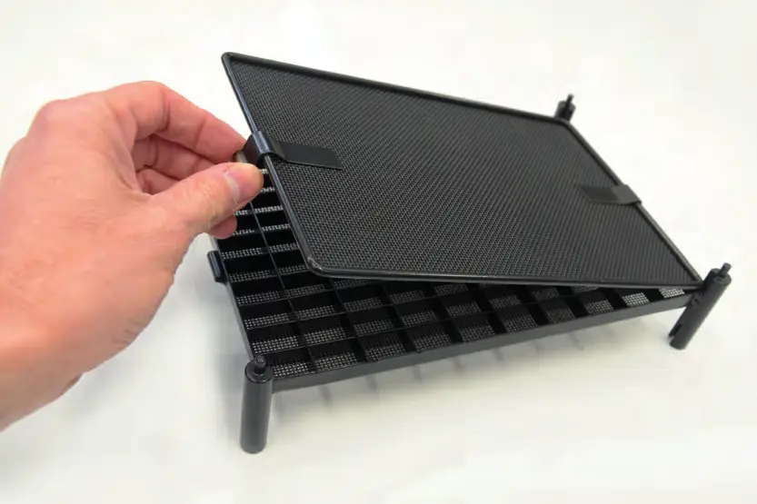
Rimann AG
Machines de lavage de copeaux et paniers de lavage
Risse Béton SA
Production de béton prêt à l'emploi
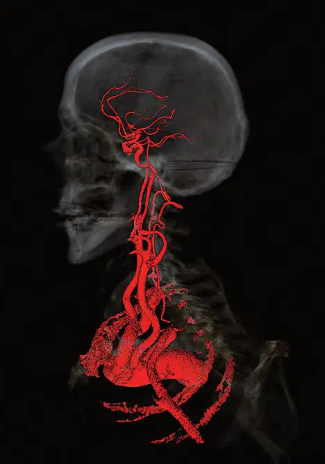
Rive Droite SA
Imagerie médicale et radiologie interventionnelle

Rofin-Lasag AG
Lasers industriels

Rollomatic SA
Machines d'affûtage et de découpe laser

Röthlisberger AG – Die Schreinermanufaktur
Menuiserie et agencement intérieur

Rothpletz, Lienhard + Cie AG
Ingénierie civile et entreprise de construction

Roud'hor SA
Fabrication de rouages horlogers

Roxer SA
Machines de test d'étanchéité et outils horlogers
Rudolf Brügger SA
Composants micromécaniques en matériaux extra-durs

Ryf AG
Microscopie industrielle et systèmes de mesure
S. Roubaty SA
Réseaux câblés et génie civil
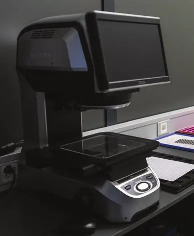
S&T Polissage
Polissage et terminaison de l'habillage horloger

S+M Architectes SA
Bureau d'architectes

Sabato Group
Micromécanique, usinage laser et composants horlogers

SAFED Suisse SA
Installations de traitement thermique
Sandro Vanini SA
Spécialités alimentaires tessinoises
santésuisse
Faîtière des assureurs-maladie

Saphirwerk AG
Usinage de matières dures (saphir, céramique, pierres)
SBB Infrastruktur Projekte Region Mitte
Chemins de fer – projets d’infrastructure
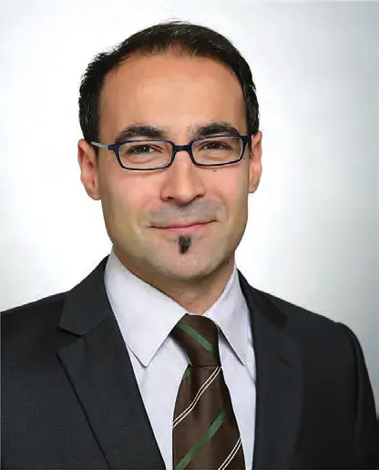
SCA Hygiene Products AG
Produits d'hygiène et d'incontinence (TENA)

Schmidt Technology GmbH
Presses et servopresses

Scholl-Metal SA
Construction métallique et tôlerie

Schuldirektion der Stadt Solothurn
Écoles communales
Schule Aarau
École obligatoire

Schweizerische Bauschule Aarau
École supérieure de la construction
Schweizerische Bundesbahnen SBB
Chemins de fer fédéraux – infrastructure ferroviaire

Sebal SA
Verres de montres en saphir

SEFA SA – Société électrique des forces de l'Aubonne
Production et distribution d'énergie, multimédia
SEIC
Distribution d’énergie et de signaux numériques
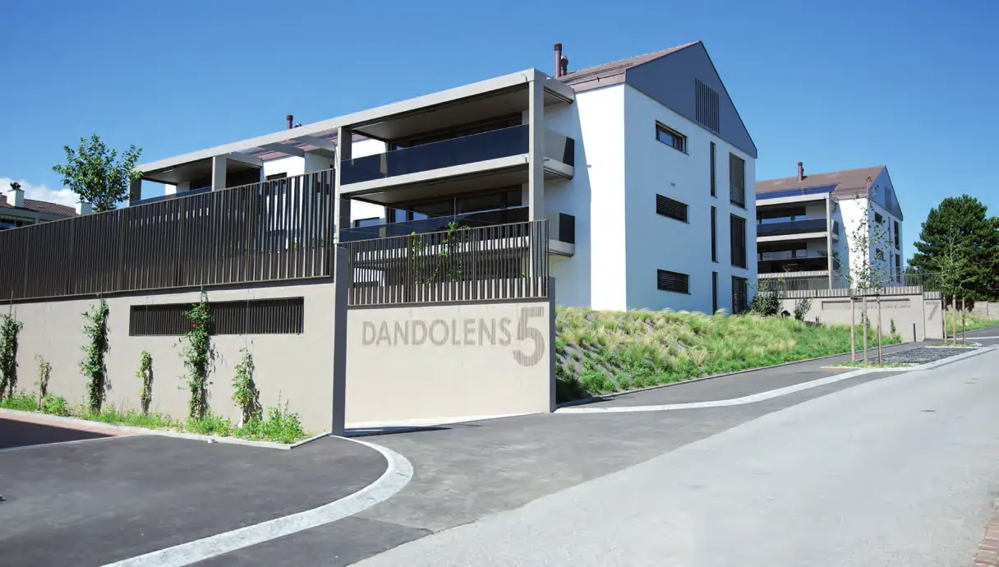
Sennwald Architectes SA
Bureau d'architectes et design intérieur

Serge Meister SA
Serrages de précision pour décolleteuses
Service de l’énergie – Canton de Fribourg
Administration cantonale – énergie
Service de l’énergie et des forces hydrauliques – Canton du Valais
Administration cantonale – énergie
Service de la promotion économique et du commerce – État de Vaud
Administration cantonale – promotion économique
Service des bâtiments – État de Fribourg
Administration cantonale – patrimoine immobilier
Service des bâtiments – République et canton de Neuchâtel (DFS)
Administration cantonale – patrimoine immobilier
Service des constructions et de l’aménagement (SeCA) – État de Fribourg
Administration cantonale – aménagement du territoire

Service Immeubles, Patrimoine et Logistique (SIPAL) – Division architecture et ingénierie
Administration cantonale – patrimoine immobilier

SGI Ingénierie SA
Bureau d'ingénieurs civils

SICLI Switzerland – UTC Fire & Security Services
Protection et sécurité incendie
SID – Services industriels de Delémont
Services industriels communaux (énergie, eaux)

SIG – Services Industriels de Genève
Entreprise d’approvisionnement énergétique
Signalisation.ch SA
Signalisation routière statique et dynamique
Similor AG
Robinetterie sanitaire

Sinergy Commerce SA / Sinergy Infrastructure SA
Électricité, eau, chauffage à distance et multimédia
Sinomedica SA
Centres médicaux d'acupuncture et de médecine traditionnelle chinoise
SIPAEC SA
Produits et machines de nettoyage professionnel

SIWP Swiss Independent Watchmaking Pavilion
Exposition d'horlogers indépendants

Société Electrique du Val-de-Travers (SEVT)
Électricité : distribution, production, installations et commerce
Société Suisse de Chronométrie (SSC)
Organisation professionnelle horlogère
Soleol SA
Installations solaires photovoltaïques
Solmani SA
Signalisation dynamique et smart city

Solothurner Handelskammer (SOHK)
Chambre de commerce

Solstis
Installations solaires photovoltaïques

Somtec-CH SA
Rodage, polissage et machines de polissage

SPALU SA
Revêtements routiers, étanchéité, bâtiment et génie civil

Spannverbund Bausysteme GmbH
Systèmes de construction mixte acier-béton

Spital Uster
Hôpital régional

Spitex Zürich Limmat
Aide et soins à domicile

srg | engineering
Ingénierie CVSE et sécurité
STA Calderari SA (Calderari Insieme®)
Entreprise générale, ingénierie et construction
Staatssekretariat für Bildung, Forschung und Innovation SBFI
Administration fédérale de la formation et de la recherche

Stadt Aarau
Commune

Stadt Baden – Standortmarketing
Marketing territorial

Stadt Bern – Präsidialdirektion
Administration communale

Stadt Biel – Wirtschaft / Statistik
Administration communale

Stadt Solothurn – Stadtpräsidium
Administration communale

Stadt Winterthur – Departement Bau, Amt für Städtebau
Urbanisme

Stadt Winterthur – Departement Kulturelles und Dienste, Stadtentwicklung
Développement urbain

Stadt Zürich – Präsidialdepartement
Administration communale
Stadtbauamt Solothurn
Urbanisme et constructions publiques
Stadtbüro Stadt Baden
Administration communale

Stadtentwicklung Stadt Zürich – Wirtschaftsförderung
Promotion économique

Stadtverwaltung Winterthur
Administration communale
Standortförderung Kanton Bern
Promotion économique cantonale

Standortförderung Kanton Bern (SF BE)
Promotion économique cantonale

Stettler Sapphire AG
Composants techniques en saphir et glaces de montres
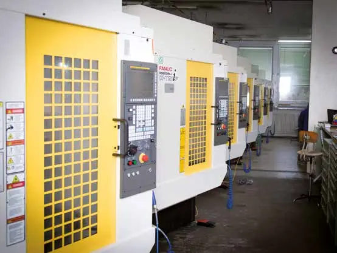
Stila SA
Fabrication de boîtes de montres haut de gamme
STL Swiss SA
Bracelets et boucles métalliques haut de gamme

Stoco SA
Machines et sous-traitance de pré-assemblage horloger (T0)

Strateg SA
Entreprise totale pour projets immobiliers

STS Saulcy Traitement de Surface SA
Galvanoplastie et traitements de surface
Studio d’ingegneria Bernardoni SA
Bureau d’ingénierie civile

Studio d’ingegneria Bonalumi e Ferrari SA
Bureau d’ingénierie (statique, hydraulique, acoustique, trafic)

Studio d’ingegneria Ezio Tarchini SA
Bureau d’ingénierie civile

Surcotec SA
Traitements de surface sous vide (PVD, CVD) et analyses MEB

Suvema SA
Machines-outils CNC

SWIP Saphirwerk Industrieprodukte AG
Usinage de céramiques techniques, saphir et rubis

Swiss Institute for Regenerative Medicine (SIRM)
Recherche en médecine régénérative
Swiss Stem Cell Bank SA (SSCB)
Biobanque de cellules souches

Swiss Welding Institute – Institut Suisse de la Soudure (SWI)
Formation, recherche et expertise en soudage
Swisscom SA
Télécommunications et services IT pour la santé

SwissCreativeLab
Plateforme commune de marques indépendantes

Swissmem
Association de l'industrie MEM

Swissmill (Division der Coop Genossenschaft)
Meunerie

swisspro SR SA
Installations électriques, ICT et BCT
SYC Montres SA
Conception et fourniture de montres complètes et composants
Syvaco Sàrl
Revêtements DLC et machines de dépôt sous vide
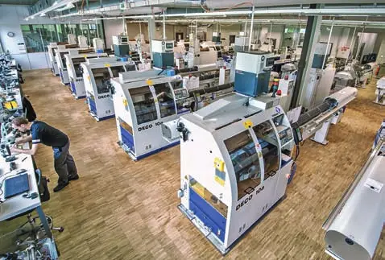
Tavadec SA
Micro-décolletage de haute précision

TCI Engineering SA
Automatisation industrielle
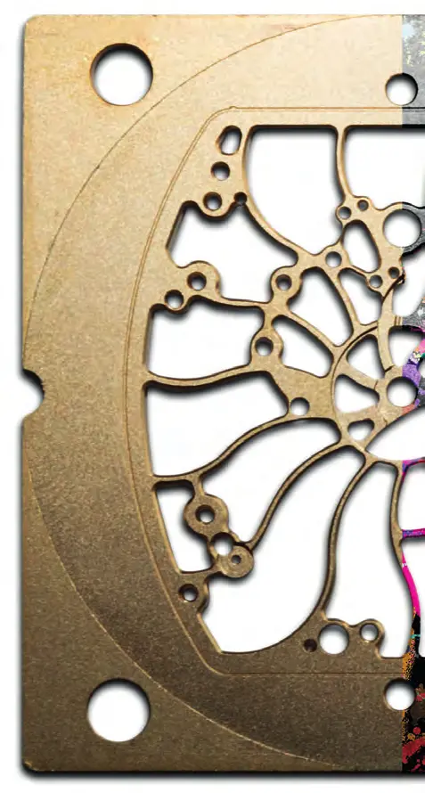
TEC Arts HD SA
Décoration par water transfer printing
TEC Ebauches SA
Ébauches, composants et mouvements horlogers
Tech-Insta SA
Installations techniques du bâtiment et de l’industrie
Technical Watchmaker Show (TWS) – Event High Sàrl
Salon de la sous-traitance horlogère
Techno-Synthetic SA
Micro-injection plastique
Technocut SA
Découpe et gravure laser de haute précision

TechnoFinish SA
Postes de polissage et consommables
TechnoFormage SA
Emballages thermoformés et injectés

Technopole Sainte-Croix
Promotion économique – technopôle
Technopoli SA
Polissage et finitions horlogères

Tectri SA
Usinage complexe de pièces tournées et fraisées

Tekhne SA
Planification générale et direction de projets de construction
Ticinomoda – Associazione Fabbricanti e Operatori Ramo Abbigliamento del Cantone Ticino
Association de la branche de la mode

Tiefbauamt der Stadt Bern (Office des ponts et chaussées de la ville de Berne)
Administration communale – génie civil et espace public
Tiefbauamt des Kantons Bern
Administration cantonale – ponts et chaussées

Timcal Ltd. (Timcal Graphite & Carbon)
Graphite et noirs de carbone
Timsaph SA
Production de saphir synthétique
tl – Transports publics de la région lausannoise SA
Transports publics

TMR SA (Transports Martigny et Régions)
Transports publics ferroviaires et routiers
Tornier AG
Dispositifs médicaux orthopédiques (extrémités)

TPL – Trasporti Pubblici Luganesi SA
Transports publics urbains

TPN – Transports publics de la région nyonnaise SA
Transports publics (bus)
Transcendance Sàrl
Décoration horlogère haut de gamme
TransElec Ingénierie Sàrl
Bureau d'ingénieurs civils
Transferts Vidéo & Film SA (TVF)
Transfert et sauvegarde de films et vidéos
Transitec Ingénieurs-Conseils SA
Bureau d’études en mobilité et transports

TransN Transports Publics Neuchâtelois SA
Transports publics (bus, trains, funiculaires)

Transports de la région Morges-Bière-Cossonay – MBC
Transports publics
Transports publics de la région nyonnaise SA (TPN)
Transports publics

Transports publics fribourgeois (TPF) SA
Transports publics

TRB Chemedica
Laboratoire pharmaceutique (ophtalmologie, rhumatologie, neurologie)
Treuhand|Suisse – Schweizerischer Treuhänderverband
Association professionnelle des fiduciaires
Trigonorm AG (Trigonorm SA)
Rayonnages et aménagements de stockage sur mesure

TSM Compagnie d’Assurances
Assurance transport et risques spéciaux

Turbomach SA
Groupes de production d'énergie à turbines à gaz
Ufficio per lo sviluppo economico – Dipartimento delle finanze e dell'economia (DFE), Cantone Ticino
Administration cantonale (promotion économique)
Ugo Bassi SA
Entreprise générale de construction

UM2 SA
Usinage de précision et terminaison de pièces complexes
Unipharma SA
Importation et distribution de médicaments

Universität Bern
Université

Universität Bern – Rektorat
Université
Universitätsspital Basel – Orthopädische Universitätsklinik
Hôpital universitaire – orthopédie et traumatologie

UniversitätsSpital Zürich (USZ)
Hôpital universitaire

Université de Fribourg
Université – formation et recherche en médecine

Université de Genève – Faculté de médecine
Faculté universitaire de médecine

Université de Neuchâtel – Faculté de droit, Centre en aménagement du territoire et urbanisme
Enseignement supérieur et recherche

Université Ouvrière de Genève (UOG)
Formation pour adultes
usic – Union Suisse des Sociétés d’Ingénieurs-Conseils
Organisation patronale des bureaux d’ingénieurs

V+A Zwissig SA
Transports, terrassement et services

Valcoris Gestion de fortune et de patrimoine
Gestion de fortune, fiduciaire et accompagnement des seniors

Valrésidence Sàrl

Vaudoise Assurances
Assurances
Veltigroup
Services informatiques et de télécommunication (ICT)
Verband Wirtschaft Thun Oberland
Association économique
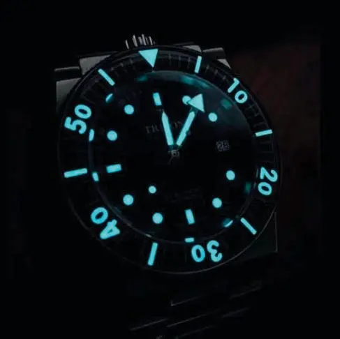
Vicro SA
Habillage horloger (décalque, laque, Superluminova, collage, laser)
Videsa SA
Assainissement, vidange et curage

Vigier Beton Nordwest
Béton, mortiers et granulats

Vigier Beton Seeland Jura AG
Béton, granulats et recyclage de matériaux de construction

Ville d'Aubonne
Commune

Ville d'Yverdon-les-Bains
Commune
Ville de Bulle
Administration communale

Ville de Carouge
Commune

Ville de Fribourg
Administration communale

Ville de Gland
Commune

Ville de La Chaux-de-Fonds – Service des relations régionales et des affaires extérieures
Commune

Ville de Lancy
Commune
Ville de Lausanne
Commune
Ville de Martigny
Administration communale

Ville de Meyrin
Commune

Ville de Morges
Commune

Ville de Neuchâtel – Conseil communal
Administration communale
Ville de Neuchâtel – Culture, Sports, Tourisme
Administration communale (culture, sports, tourisme)

Ville de Neuchâtel – Direction de l'Urbanisme, de l'Économie et de l'Environnement
Urbanisme et développement économique
Ville de Nyon
Commune
Ville de Sierre
Administration communale
Ville de Sion
Administration communale
Ville de Vevey
Commune
VitalRh Sàrl
Recrutement et placement de personnel médical

VOH SA
Appareils et outillage pour l’horlogerie
Volkswirtschaftsdirektion des Kantons Bern
Administration cantonale (économie publique)
Volkswirtschaftsdirektion des Kantons Zürich
Administration cantonale

Voser Treuhand AG
Fiduciaire – comptabilité, fiscalité, assainissement
VSS – Schweizerischer Verband der Strassen- und Verkehrsfachleute
Association professionnelle et normalisation routière
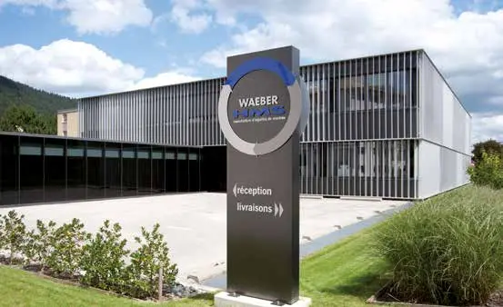
Waeber HMS SA
Fabrication d’aiguilles de montres

WAG Watches Art Gallery
Association culturelle et label d'art horloger
Watch City
Plateforme de soutien au sport régional
Watch-Déco Sàrl
Mécanique horlogère, décolletage et terminaisons
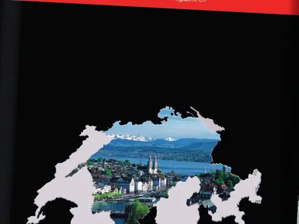
WatchDec SA
Microdécolletage CNC
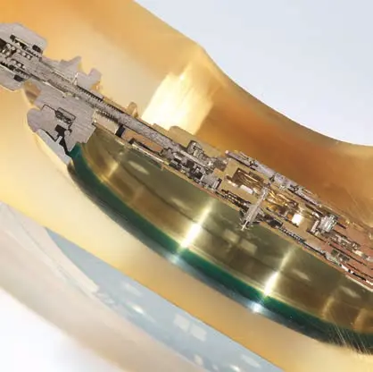
Well Diamond Wire Saws SA
Scies à fil diamanté

Wenk SA
Importation et service de machines-outils

Wirtschaftsfachstelle der Stadt Aarau
Promotion économique communale

Wirtschaftskammer Biel-Seeland (WIBS) / Chambre économique Bienne-Seeland
Chambre économique régionale
Wirtschaftsraum Bern (Espace économique bernois)
Promotion économique régionale

Witech SA
Machines-outils compactes
Wonderware SA
Logiciels industriels (supervision, MES)
WVO – Wirtschaftsverband Oberaargau
Association économique
Ynovatec SA
Distribution d’équipements d’automation et solutions d’automation
Zimmerli SA
Commerce de machines-outils pour l'horlogerie
Zürcher Frères SA
Métallurgie des poudres et masses oscillantes
Zürcher Handelskammer (ZHK)
Chambre de commerce

Zurich Assurances – Agence générale Alexandre Ducrot
Assurances
Aucune entreprise ne correspond à ces critères.